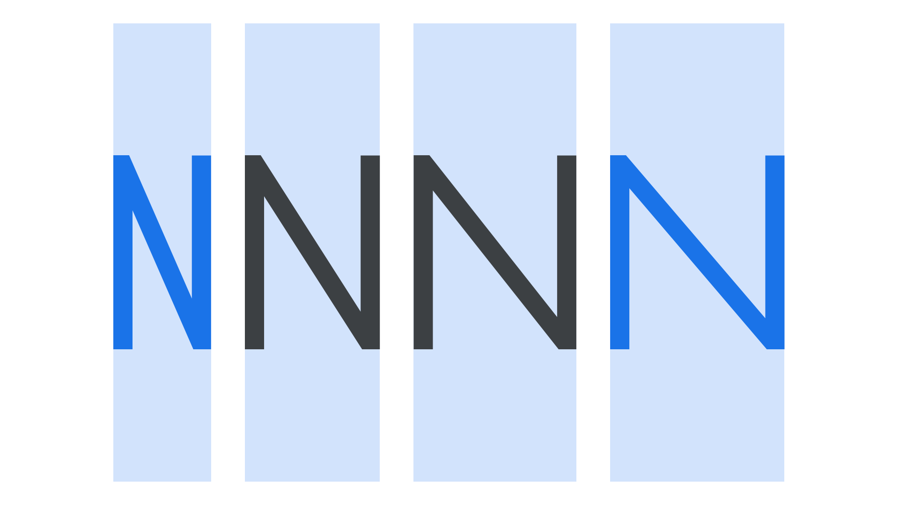

Width
By Google Fonts Knowledge contributors · Google Fonts Knowledge.
Original article · Source on GitHub · CC BY-SA 4.0. Text, illustrations and existing credits reproduced from the licensed Knowledge repository. Open Shelf adapted the layout and links; these adaptations are also CC BY-SA 4.0. No endorsement implied.
Width is the result of how much horizontal space is taken up by a typeface’s characters. A condensed face takes up considerably less space than a wide one.

Although different widths of a single typeface family have traditionally been separated out into individual font files, variable fonts allow foundries to distribute all widths in one unified file. Variable fonts also give freedom to the end user (the designer) to use bespoke widths in between the pre-defined instances by adjusting a variable font’s width axis.
It’s also worth noting that in the majority of typefaces, a font’s weight affects its width: A bold style normally takes up more horizontal space than a regular style. The exception to this rule is a multiplexed design.